Identita domu
Upozornění – částečně hypotéza: Dům je doložen jediným snímkem z doby kolem roku 1925 (pravá polovina průčelí a východní štít); levá polovina, ostatní strany a výšky jsou hypotéza. Stav v 60. letech není doložen – podle karty mlýn zanikl při rozšiřování lomu.
Budova GIS 1573 na severozápadní straně silnice naproti dolu Evžen, před drážním podjezdem: tzv. Prachový mlýn (Pulvermühle), v době snímku kolem roku 1925 už přestavěný na byty. Podle karty Komplet Starý Most zanikl při rozšiřování povrchového lomu dolu (později Ležáky II) a jeho číslo bylo po roce 1930 přeneseno na přestavbu vedle hostince Bílý Beránek v ulici J. Švermy; karta KSPPOP s fasádou a náčrt 421/5 u Švermovy patří tomu pozdějšímu domu. Plán města 1938 (GIS) dům na Pařidelské ještě vede.
Použité prameny: fotografie Okresního muzea ~1925 (jediný snímek domu) s kartou Komplet Starý Most, GIS půdorys 1573 (12,5 × 9,5 m); karta KSPPOP 10.243, fotografie fasády a náčrt u Švermovy = pozdější dům téhož čísla (nepoužito).
Kde je dům na fotografiích
Dům je na snímku v červeném rámečku, sousední domy jsou popsány čísly a každý otvor má ID, podle kterého se počty otvorů kontrolují proti modelu. Kliknutím otevřete větší obrázek.

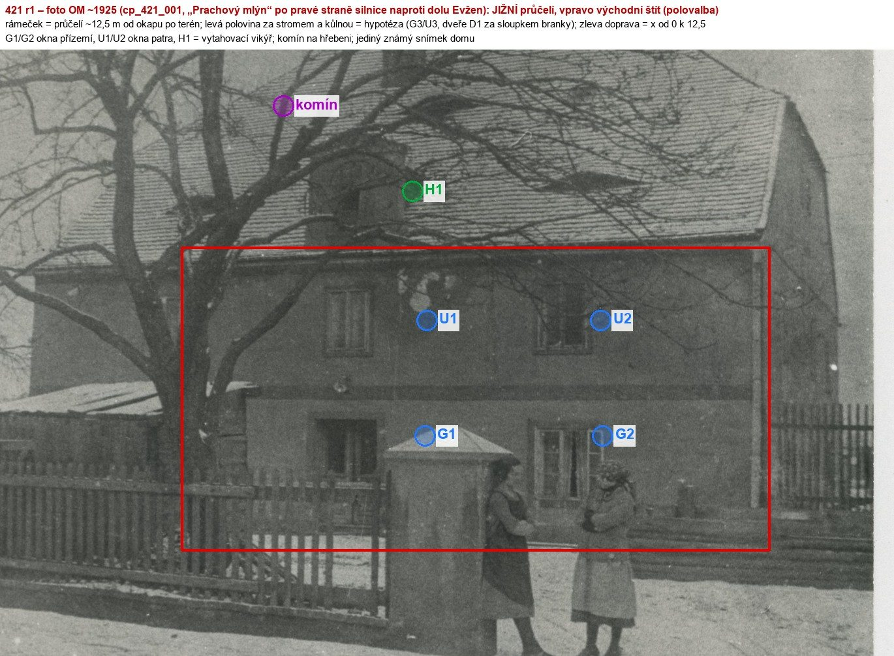
Přílohy v databázi (8)
Všechny přílohy struktury 421 v databázi Libuše, načtené živě 3. 11. 2026 jen pro čtení a otevřené. Kliknutím otevřete větší náhled.

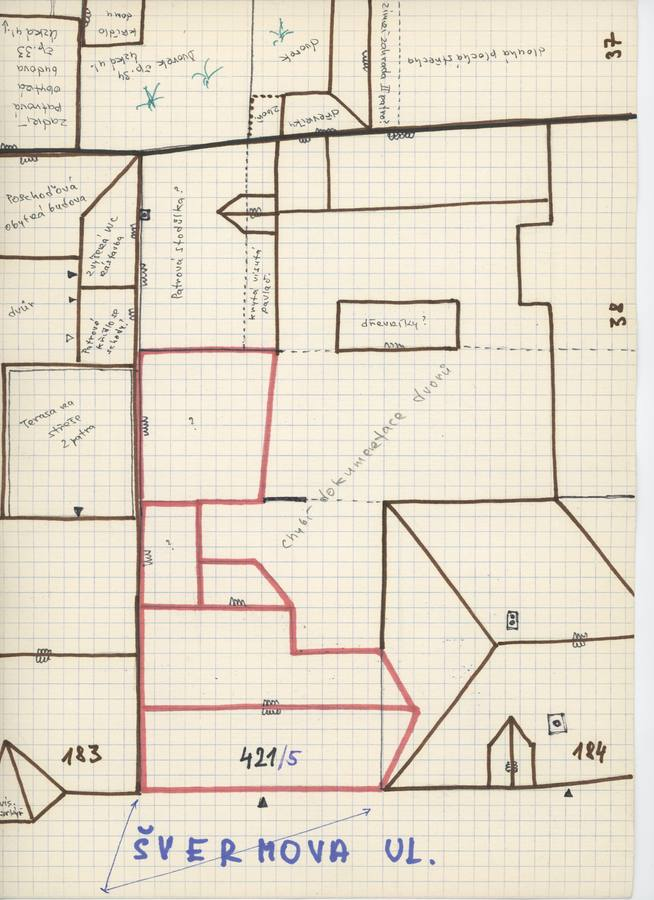
plán / výkres
SHA-256 4fa474a828aa…

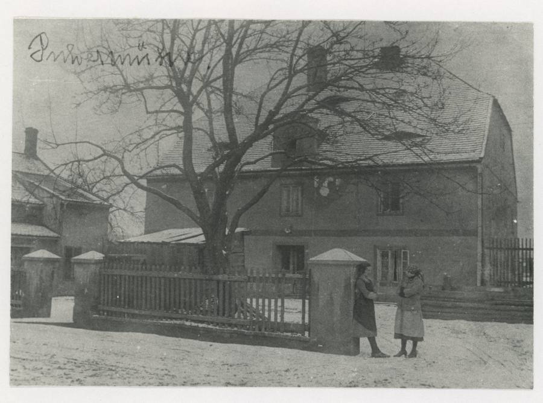
fotografie
SHA-256 45355e765bcc…

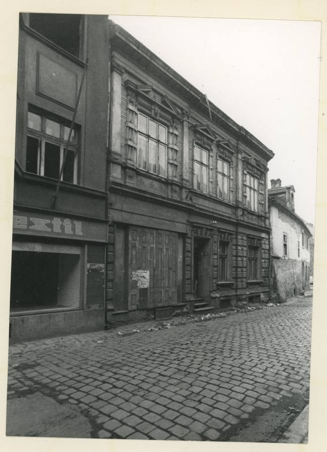
fotografie
SHA-256 441e66a3fa80…

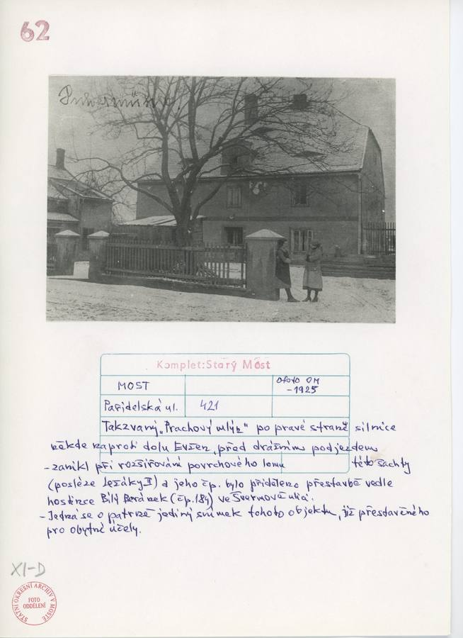
archivní karta
SHA-256 af92604a2bd0…

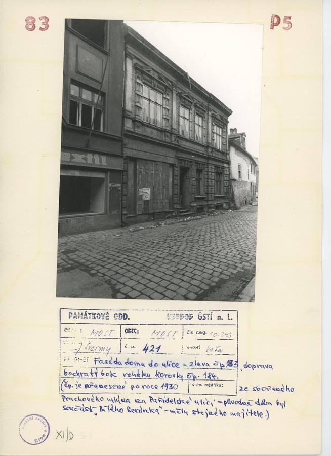
archivní karta
SHA-256 52d6bb1ad703…

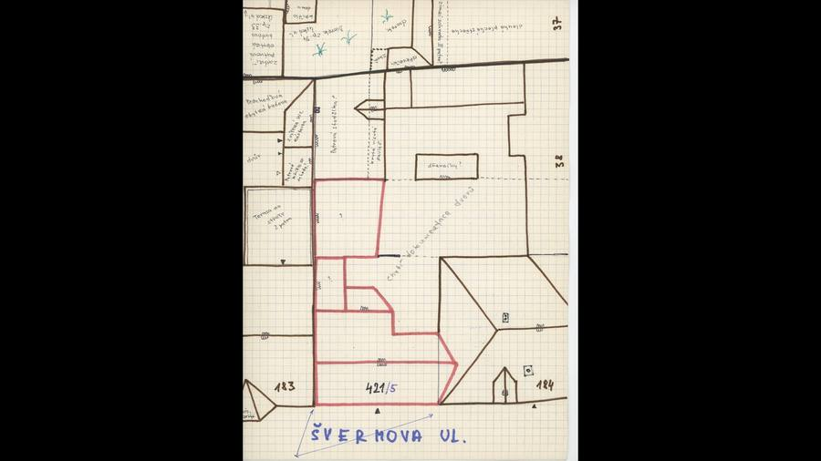
odvozenina bez tagu (kolorovaná / výřez / FRONT)
SHA-256 f6b366085459…

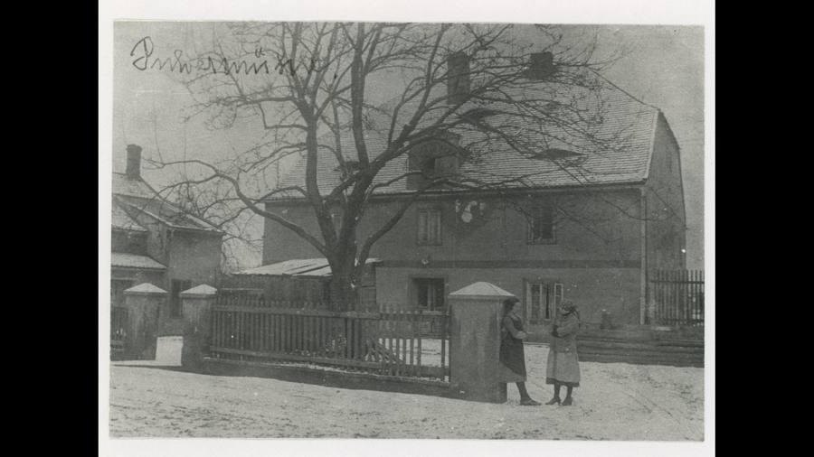
odvozenina bez tagu (kolorovaná / výřez / FRONT)
SHA-256 d08129257474…

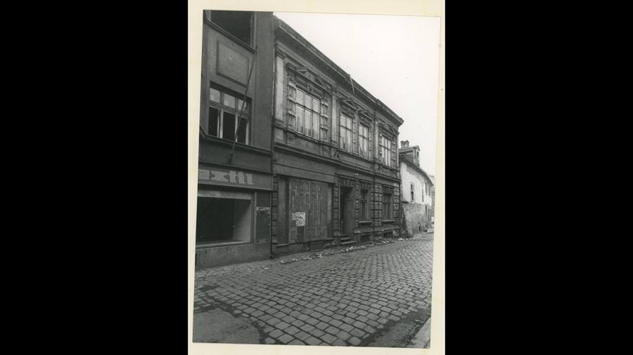
odvozenina bez tagu (kolorovaná / výřez / FRONT)
SHA-256 3cc5009d99d6…
Geometrie
| Revize geometrie | r1 |
|---|---|
| Úsek ulice | SZ · severozápadní strana (u hřiště) |
| Poloha | GIS budova 1573, popisek 421, ulice Pařidelská |
| Šířka průčelí | 12,50 m |
| Výška okapu | 5,55 m (odhad) |
| Podlaží | 2 |
| Střecha podle pramenů | sedlová s polovalbami podle snímku (východní štít s malou valbou), hřeben podél průčelí, sklon ~35°, vytahovací vikýř, komín na hřebeni |
| Otvory / vikýře v modelu | 8 / 1 |
| Polygonů | 176 |
Kontrolní pohledy

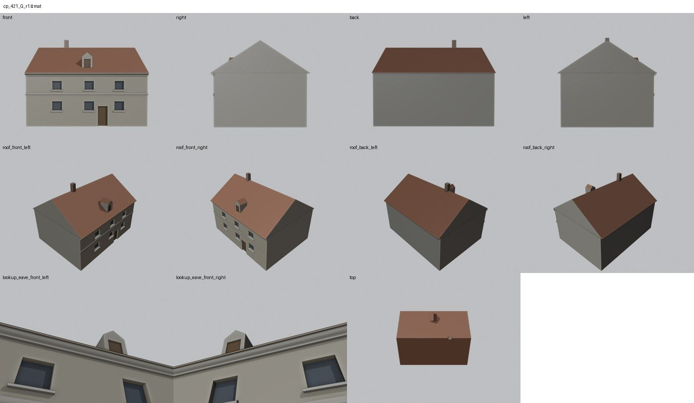

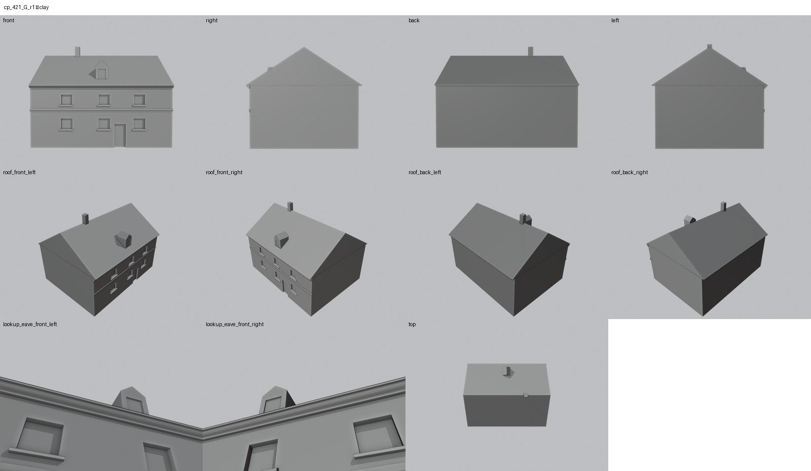
Kontrola modelu
| Brána geometrie (automaticky) | v pořádku |
|---|---|
| Uzavřené podkroví (GLB) | v pořádku: zásahy paprsků 0, nekryté zdivo 0,00 m², střecha nad prázdnem 0,00 m² |
| UV mapování | v pořádku: 0 zkolabovaných ploch z 176 |
| Síť | v pořádku |
| Počty otvorů proti pramenu | souhlasí zčásti (passed_partial) |
| Vizuální kontrola | prošla (Claude (Fable 5.1), 2026-11-05) |
| Kontrola střechy | prošla |
- hlavní průčelí (do ulice): foto cp_421_001 (~1925) – pravá polovina; levá polovina za stromem (passed_partial)
- vikýře / podkrovní okna: vytahovací vikýř na snímku (souhlasí)
Textury
bez textur (částečně hypotéza – jen prosté materiály)
Až Codex dodá texturovaný model, objeví se v prohlížeči nahoře volba Textury (Codex).
Hypotézy
Upozornění – částečně hypotéza: Dům je doložen jediným snímkem z doby kolem roku 1925 (pravá polovina průčelí a východní štít); levá polovina, ostatní strany a výšky jsou hypotéza. Stav v 60. letech není doložen – podle karty mlýn zanikl při rozšiřování lomu.
Vše níže je model_hypothesis, provisional, locked: false.
- jediný snímek je z doby kolem roku 1925; stav v 60. letech není doložen (mlýn zanikl při rozšiřování lomu, datum neznámé)
- na snímku je jen pravá polovina průčelí (2 osy) a východní štít; levá polovina za stromem a kůlnou: okno a vstupní dveře za sloupkem branky jsou hypotéza
- výšky z poměrů na snímku (okap 5,6 m, hřeben 8,9 m) ±0,4 m; boční a zadní stěny bez otvorů
- polovalby builder nemá – štíty jsou plné; kůlna před domem a budova vlevo nejsou modelovány
Technický zápis hypotéz v plánu modelu (revize r1, bez diakritiky)
- jediný snímek domu (~1925) – stav v 60. letech není doložen: podle karty mlýn zanikl při rozšiřování lomu dolu Evžen (Ležáky II) a čp. bylo po roce 1930 přeneseno jinam; plán 1938 (GIS) dům ještě vede
- levá polovina průčelí za stromem: okno G3/U3 a vstupní dveře D1 za sloupkem branky jsou hypotéza (symetrie, branka vede ke dveřím)
- výšky z poměrů na snímku (okap 5,55, hřeben 8,9 m, okna 1,65–2,6 / 3,8–4,7) ±0,4 m; terén za plotem odhad
- boční a zadní stěny bez pramene – bez otvorů; kůlna před levou částí a budova vlevo (s valbou) nejsou modelovány
- polovalby štítů nejsou v builderu – štíty plné; vytahovací vikýř H1 zjednodušen na sedlový vikýřek s otvorem
Historie revizí modelu
- r1 3.11.2026: první stavba podle jediného snímku ~1925 a půdorysu GIS 1573
Soubory
- Geometrie čp. 421, GLB (revize r1)
- Pracovní model: F:\MOST\output\paridelska_street_claude_2026-10-29\houses\cp421\r1\cp_421_G_r1.blend
- Plán modelu: F:\MOST\output\paridelska_street_claude_2026-10-29\houses\cp421\geometry_plan.json